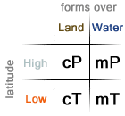
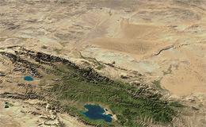
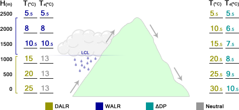

The Mountain Problem
Orographic Lifting, Adiabatic Processes
- Air, Moisture and Mountains
- Adiabatic Heating and Cooling
- Rainshadow Deserts
- Simplified Example
- Why do the DALR and WALR differ?
Air, Moisture and Mountains
The temperature of a mass of air determines how much moisture content it can hold. Warmer air can hold more moisture than cooler air, so air masses that are very cold hold little or no moisture content. Masses of air are categorized by where they originate, and where they originate determines their relative temperature and their moisture content. Air masses that form over water are heavily saturated since they typically form over oceans where water is abundant and are usually referred to as maritime air masses. Dry air masses commonly form over large continental areas where the lack of water at the surface results in the relatively arid air mass known as a continental air mass. When the air mass forms in a cool (normally high latitude) region it is known as polar, conversely when the air mass forms in a warm region it is referred to as tropical. Combining these two dimensions of moisture availability and latitude, we find the four most common air masses: maritime polar (mP), continental polar (cP), continental tropical (cT) and maritime tropical (mT).

Energy is transferred from different latitudes by these air masses as they flow across the surface of the earth. When warm, moist air meets cool, dry air the cooler air sinks beneath the warmer air mass since it is more dense. This forces the warm, moist air mass upward causing it to cool which eventually leads to the air reaching its dew point. Collisions of air masses create precipitation, storms and other forms of weather, but there are other methods of making an air mass reach its dew point.
Continents are not entirely flat and the change of height on land leads to orographic lifting. As air moves, it flows over the land very much like water would flow over obstacles in a stream. Changes in elevation lead to the trapping of these air masses and as more and more air arrives behind the already slowed air it forces much of the air upward. As we learned before, air that rises cools. As air cools, it becomes closer and closer to its dew point and eventually reaches it causing clouds to form. Many mountains where moist air masses are constantly arriving receive high amounts of annual rainfall. Other mountain systems only receive warm, moist air masses during specific times of the year due to cyclical fluctuations caused by the direct influence of the sun (further reading: ITCZ) which creates monsoon conditions during parts of the year.
Adiabatic Heating and Cooling
The rate that air changes temperature involves complicated math and has to take into account a wide range of environmental factors. For the purposes of learning the two different kinds of adiabatic heating and cooling are generalized to be specific constants which are used to show the relationship of air masses, along with how they interact as they ascend upward or descend downward. The relationships between elevation are preserved which means the given examples are representative of a real-world situation but not precise.
If air is not saturated, it will cool as it rises at a rate of approximately 10°C/km as it ascends. Air cools as it rises due to atmospheric pressure dropping with height. The higher the altitude, the less amount of air matter is above applying force downward which leads to cooling. This process is abbreviated as "DALR" which stands for "Dry Adiabatic Lapse Rate". The dew point of air that is rising remains relatively the same as altitude increases. This allows the air to meet its dew point as the air cools at the DALR which leads to the formation of clouds, fog and eventually rain. After air has reached its dew point it continues to cool as it rises upward, but it does so at a slower rate known as the "WALR" which stands for "Wet Adiabatic Lapse Rate" and is about half the DALR making it about 5°C per kilometer. It is sometimes known as the "SALR" where the "S" stands for "Saturated".
Where air meets its dew point as it ascends is known as the "LCL" (Lifting Condensation Level). The LCL is where cloud bases will form since below that point the water will not form droplets, thus preventing clouds from forming. Above the LCL, larger droplets will form and eventually fall if forced upwards high enough. This is important since it leads to the creation of deserts in some locations and very wet conditions elsewhere.
Rainshadow Deserts

The processes of adiabatic heating and cooling alongside the tremendous size and scale of many mountain ranges across the globe lead to the creation of deserts. Some deserts are formed by extremely large high pressure cells which dominate year-round while other deserts are formed by their large distances from sources of water. The effects of orographic lifting can create deserts known as rainshadow deserts which are close to water and are not plagued by the presence of a large high pressure cell year-round.
As air arrives on the windward side of a mountain range, it is forced upward and loses most of its moisture content in the form of rain on the windward side of the mountain range. On the leeward side of the mountains, the air descends and warms at the DALR since nearly all of the moisture had been removed from it on the windward side of the mountains. Eventually, the air reaches ground level and is hot and arid, unlike when it arrived on the windward side of the range. Situations like this make great examples to show how adiabatic processes work and how orographic lifting changes landscapes. Sometimes referred to simply as "The Mountain Problem" it is a classic example used to display the relationships of the DALR, WALR and how the dew point of an air mass determines the LCL.
Simplified Example
Pretend we have a mountain that has a peak altitude of 2500 meters and a mass of air with a temperature of 25°C and a dew point of 13°C. As the air rises over the mountain, its temperature changes at the DALR (10°C/km or 5°C/km) while the dew point does not change since the amount of moisture currently in the cloud remains the same. In this given example, the temperature and dew point equal each other at 1200 meters. Cloud bases will be found at this altitude and moisture will be driven out of the cloud and fall on this windward slope. Both the temperature and dew point continue to drop at the WALR since the air is fully saturated at this point (it can hold no more moisture) and at 2500 meters they are both 5.5°C.

As the air descends on the leeward side of the mountain the temperature increases at the DALR since it is no longer fully saturated. This is because the rate that the dew point changes as it descends is around 2°C/km which is less than the DALR of 5°C/km. The rate that the dew point changes as it descends is actually a complicated relationship and is set as a static value for the simplification of the problem. When the air arrives at the same elevation it began at it is 30.5°C with a dew point of 10.5°C. This air is warmer and more arid than the air that originally began its journey over the mountain. The higher the mountain, the more moisture will be forced out of the air as it rises and cools which then leads to even more arid air on the leeward side.
Why do the DALR and WALR differ?
When a given air parcel rises and cools (at the DALR) there is a chance that it will cool to its dew point. This altitude is known as the LCL (Lifting Condensation Level). After this point the air parcel is saturated and cools at a slower rate (the WALR). This is because air is a gas and the water held in it is in the form of vapor. When the water was changed from a solid or liquid into a gas it required energy to change states. Now, in the atmosphere, the gas (water vapor) is changed back to a liquid and releases the energy (previously required to turn it into a vapor) in the form of heat. This warms the air parcel and continues to happen as the cloud rises and converts more vapor into liquid. This is why the DALR differs from the WALR and why the WALR is less than the DALR.